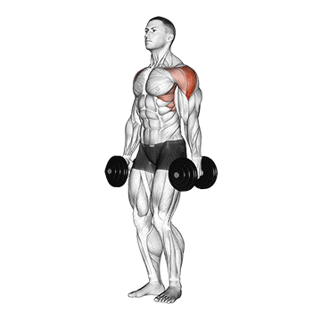
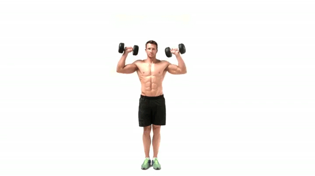

1 - Elevação Lateral
Execução: Com pesos leves (ou garrafas de água), mantenha os braços ao lado do corpo. Eleve-os lateralmente até a altura dos ombros, com uma leve flexão nos cotovelos, e desça devagar.
Dica: Evite levantar muito peso, foque no controle para trabalhar bem os deltoides laterais.
2 - Elevação Frontal
Execução:Segure um peso em cada mão, com os braços ao lado do corpo. Levante um braço à frente até a altura dos ombros e abaixe lentamente, alternando os braços ou usando ambos ao mesmo tempo.

Dica: Mantenha o abdômen contraído para estabilizar o tronco e evitar balanços.
3 - Press Militar com Halteres (ou garrafas de água)
Execução:Segure os pesos na altura dos ombros, com as palmas voltadas para frente. Empurre os pesos para cima até estender os braços, depois abaixe-os com controle até a posição inicial.
Dica: Faça o movimento devagar, sem esticar completamente os cotovelos para proteger as articulações.
4 - Desenvolvimento com Halteres Sentado
Execução: Muito semelhante ao treino 3, porem este se faz sentado. sente-se em um banco ou cadeira, mantendo a coluna reta. Segure os halteres ao lado da cabeça, com os cotovelos dobrados, e empurre para cima até que os braços estejam quase estendidos. Retorne devagar.

Dica: Esse exercício é ótimo para foco e controle; ajuste o peso para manter a boa execução.